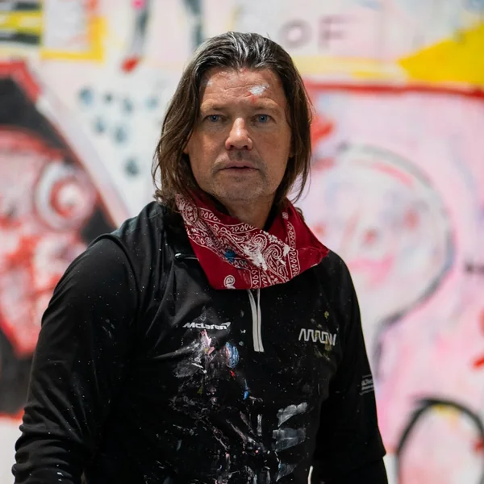
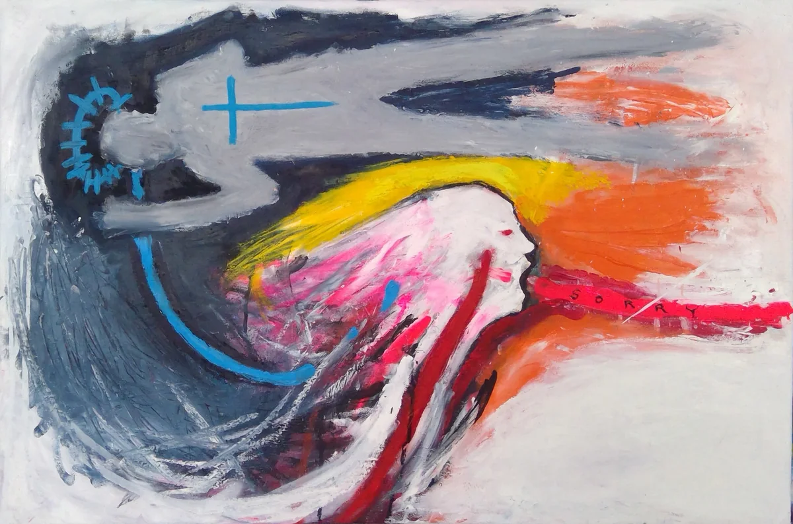
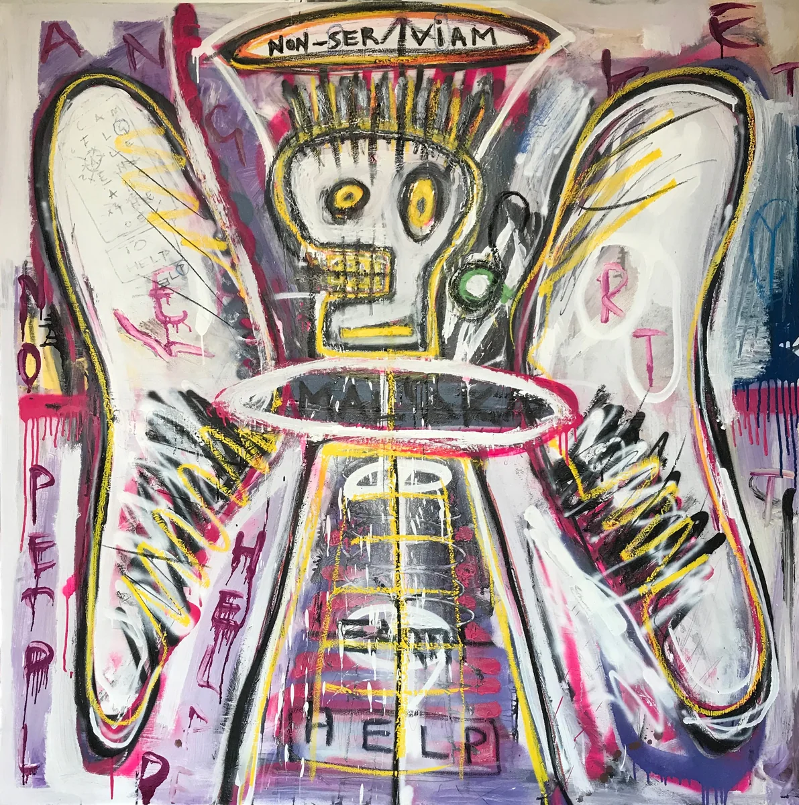
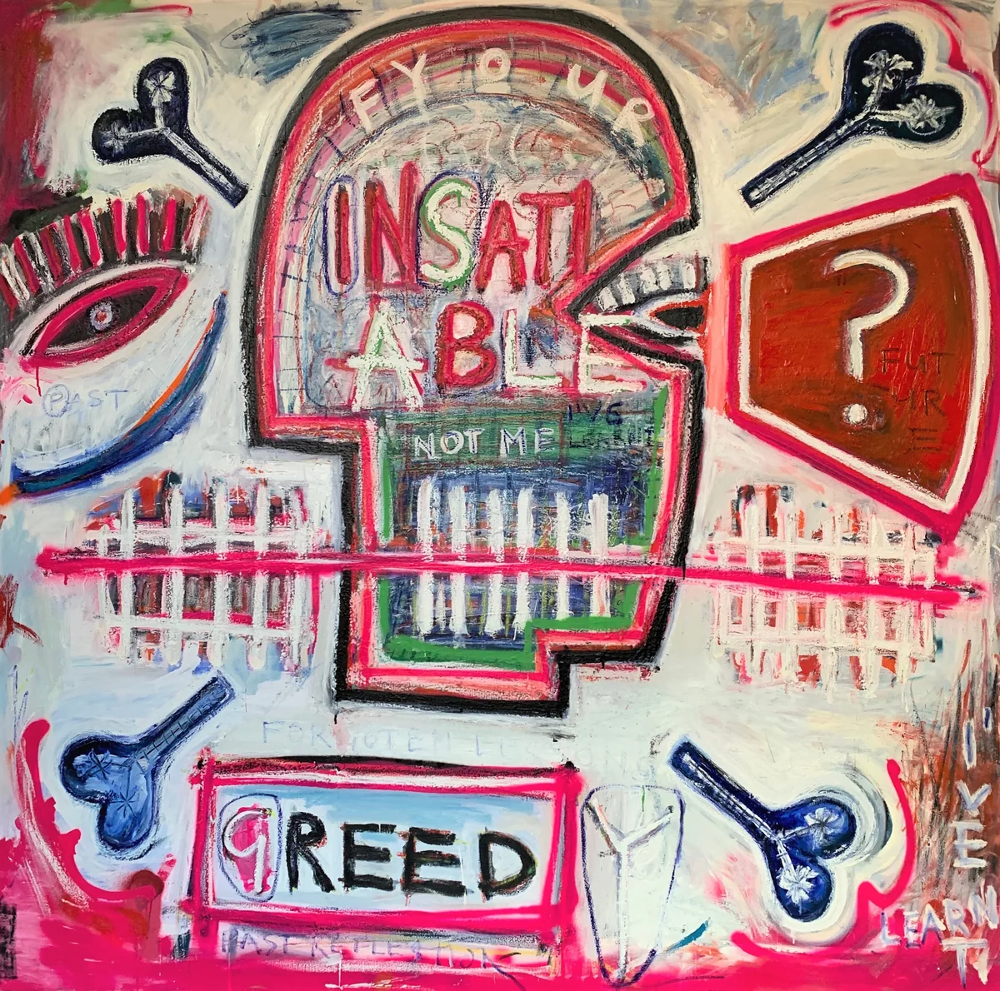
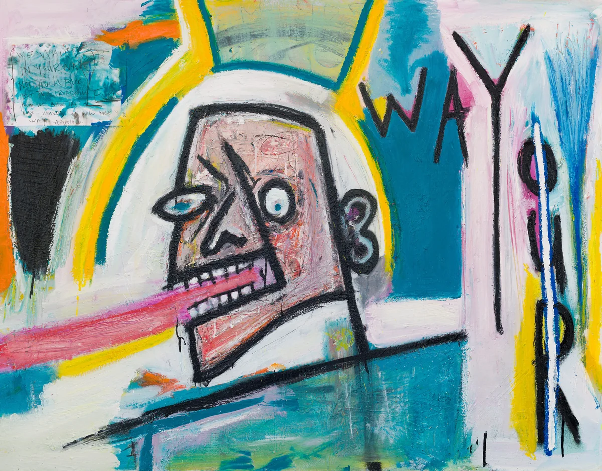
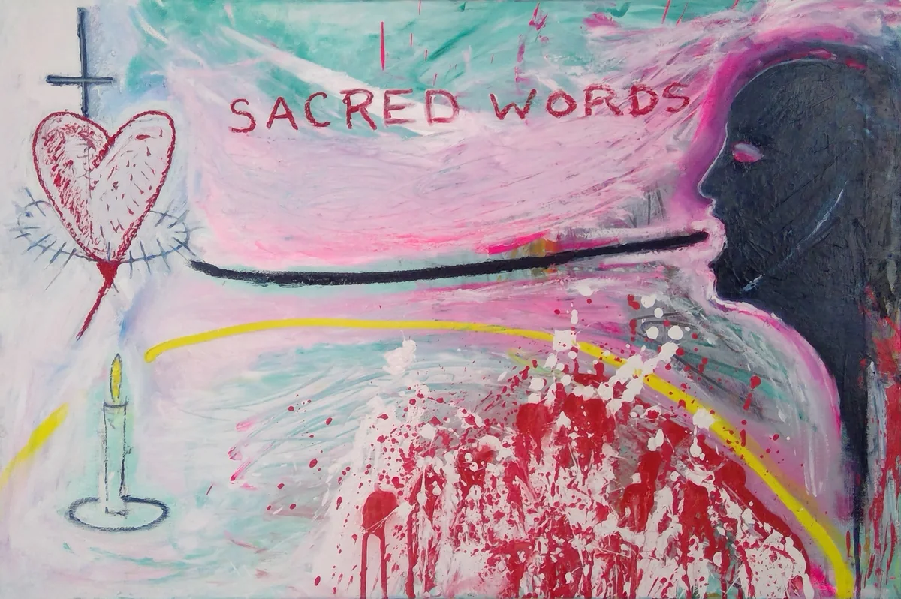
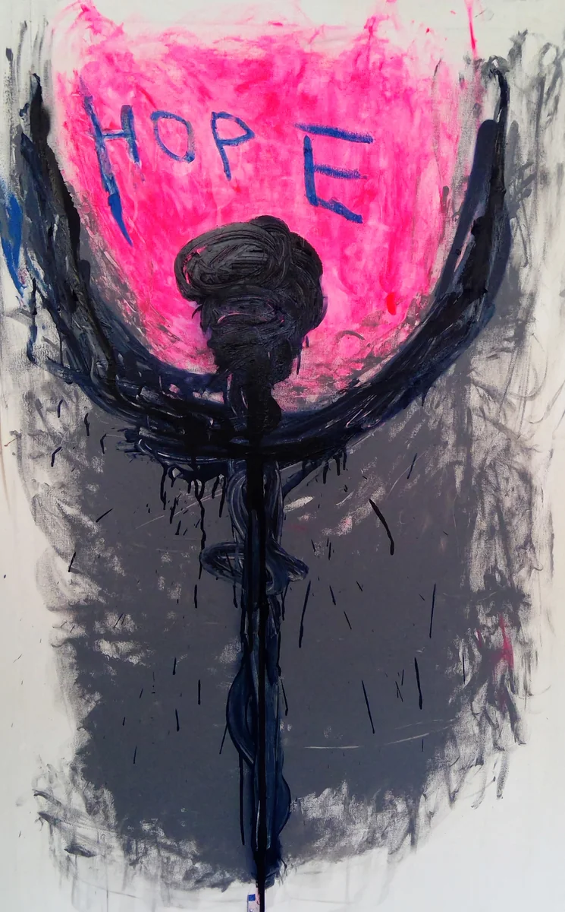
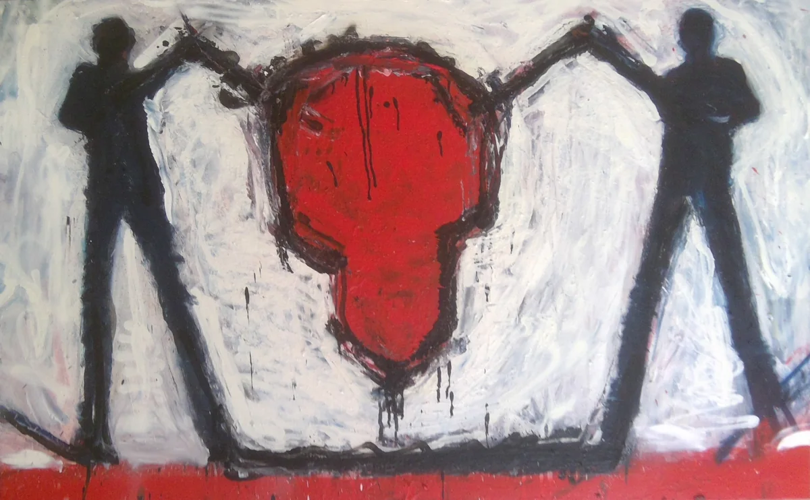
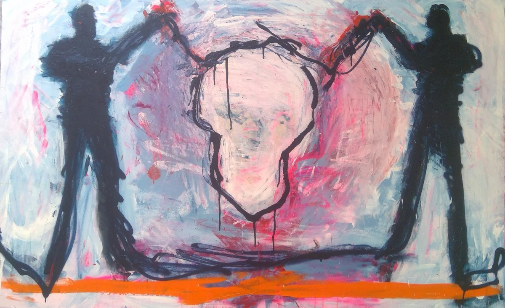

PIGSY
I explore the human psyche through bold, instinctive painting. Gestural marks, layered imagery and fragmented language become a means of examining the forces that shape human behaviour, memory and identity.
Works
12 artworks

As I Say It2025 · Mixed Media on Canvas · 54 × 81 × 5 cm€4,500
Non-Serviam2018 · Mixed Media on Canvas · 150 × 150 × 5 cm€14,000
Insatiable Greed2018 · Mixed Media on Canvas · 160 × 160 × 5 cm€11,000
Walk Your Way2021 · Mixed Media on Canvas · 115 × 146 × 3 cm€7,500
Sacred Words2025 · Mixed Media on Canvas · 54 × 81 × 5 cm€4,500
Hope2025 · Mixed Media on Canvas · 130 × 81 × 5 cm€7,000 There is Always Another Matthias2022 · Mixed Media on Canvas · 120 × 150 × 5 cm€7,500
There is Always Another Matthias2022 · Mixed Media on Canvas · 120 × 150 × 5 cm€7,500
Suspended2025 · Mixed Media on Canvas · 81 × 130 × 5 cm€7,000
An Offering2025 · Mixed Media on Canvas · 81 × 130 × 5 cm€7,000 One Two Three (iii)2021 · Mixed Media on Canvas · 202 × 125 × 3 cm€9,000
One Two Three (iii)2021 · Mixed Media on Canvas · 202 × 125 × 3 cm€9,000 Disconnected Head2025 · Mixed Media on Paper · 42 × 29.7 × 0.1 cm€900
Disconnected Head2025 · Mixed Media on Paper · 42 × 29.7 × 0.1 cm€900 Void2024 · Mixed Media on Paper · 32.5 × 50 × 0.1 cm€1,250
Void2024 · Mixed Media on Paper · 32.5 × 50 × 0.1 cm€1,250
About PIGSY
PIGSY is the artistic identity of Dublin-born Irish artist Ciarán McCoy. His practice centres on painting, exploring the psychological terrain of language, memory, identity and belonging through bold, instinctive mark-making. Working across canvas, mixed media and paper, he confronts the tension between structure and chaos, discipline and emotional expression.
A qualified architect turned artist, PIGSY brings an understanding of structure, construction and deconstruction to a practice driven by spontaneity and intuition. Drawing on personal experience, including dyslexia, his work embraces fragmentation, layered imagery and handwritten language as ways of exploring the subconscious and the psychological forces that shape human behaviour.
His recent solo exhibitions include "Wayward Tribe" (AcentricSpace, Shanghai, 2026), "Language as Wound, Silence as War" (Fade Street Studios, Dublin, 2025), "Níl Brón Orm" (360XQMX, Ajijic, Mexico, 2025), "Tá Brón Orm" (Casa Lü Sur, Mexico City, 2024) and "First Things Last" (La Casa Amarilla, Málaga, Spain, 2024).
PIGSY has exhibited internationally across Ireland, Spain, Mexico, Brazil and China, and undertaken artist residencies in Ireland, Spain, Mexico and China. His work has featured in the Hunt Museum Open Submission exhibition in Ireland and is held in private collections internationally and in the collection of Fitzwilliam Lawn Tennis Club, Dublin.
Interested in PIGSY's work?
Send an enquiry through PlotArt and we'll put you in touch with the artist.
Enquire through PlotArt